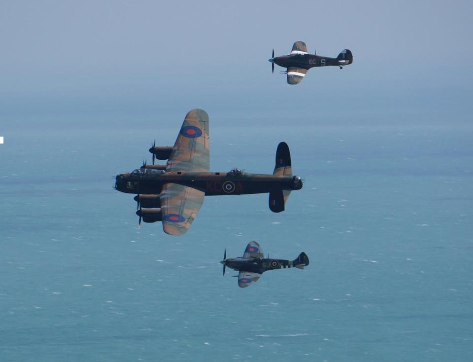

Welcome to my website dedicated to exploring the fascinating world of aircraft and the brave pilots who flew them during World War II. Here, you will find detailed information about German and British aircraft, as well as captivating stories from the pilots themselves. Whether you're an aviation enthusiast or simply curious about history, there's something here for everyone. Dive in and learn more about the incredible machines and the courageous individuals who took to the skies.
